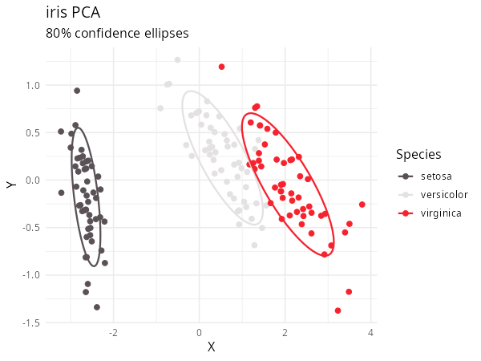
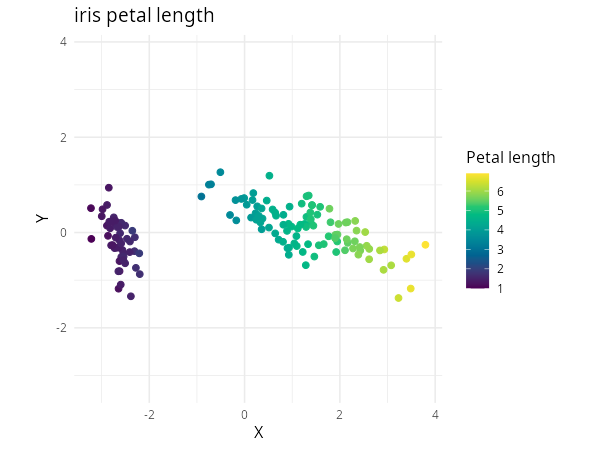

Vizier turns two-dimensional coordinates into a plot and handles common color mappings for you. This guide starts with a base R plot, then shows how to color by categories or numbers and how to switch to ggplot2 or Plotly.
Make your first plot
Attach Vizier and create two-dimensional coordinates. Here, the
coordinates are the first two principal components of the numeric
columns in iris:
Pass the coordinates and the iris data frame to
embed_plot():
embed_plot(pca_iris$x, iris)
Vizier finds the factor column Species and gives each
species a stable categorical color. If you pass a numeric vector
instead, Vizier uses a sequential Viridis color scale. These defaults
let you inspect an embedding before choosing a palette yourself.
Choose what color represents
Pass a factor or character vector when color should identify categories. You can also supply a palette function and add a title and subtitle in the same call:
embed_plot(
pca_iris$x,
iris$Species,
color_scheme = grDevices::rainbow,
title = "iris PCA",
sub = "rainbow color scheme"
)
For a crowded plot, reduce opacity with alpha_scale:
embed_plot(
pca_iris$x,
iris$Species,
color_scheme = grDevices::rainbow,
alpha_scale = 0.5
)
If you already have one color for each observation, pass it through
colors. This bypasses category and numeric mapping:
my_iris_colors <- grDevices::colorRampPalette(
c("red", "yellow")
)(nrow(iris))
embed_plot(pca_iris$x, colors = my_iris_colors)
A single value such as colors = "blue" colors every
point blue. Otherwise, provide exactly one color per row.
Pass a numeric vector when color should show magnitude. The light-to-dark scale below follows petal length:
embed_plot(
pca_iris$x,
iris$Petal.Length,
color_scheme = "RColorBrewer::Blues"
)
For a directly supplied numeric vector, top keeps only
the largest finite values. This call shows the ten observations with the
longest petals:
embed_plot(
pca_iris$x,
iris$Petal.Length,
color_scheme = "RColorBrewer::Blues",
top = 10
)
Ties are resolved by the existing row order. See the embed_plot()
reference for numeric limits, missing-value colors, and the full
selection contract.
Adjust the coordinate display
On a non-square graphics device, unequal physical units can visually
stretch a cluster. Set equal_axes = TRUE to use common
limits and equal units on both axes:
embed_plot(
pca_iris$x,
iris$Species,
color_scheme = grDevices::topo.colors,
equal_axes = TRUE
)
You can replace points with text. Labels work best when they are short and the data set is small enough to avoid heavy overlap:
embed_plot(
pca_iris$x,
iris$Species,
text = iris$Species,
cex = 0.75
)
Extend the plot with ggplot2
Install the optional ggplot2 package to use
embed_ggplot(). It returns an ordinary ggplot object, so
you can add layers, labels, and themes. For example, add an 80% ellipse
around each species:
iris_ggplot <- embed_ggplot(
pca_iris$x,
iris$Species,
cex = 2,
title = "iris PCA"
)
iris_ggplot +
ggplot2::stat_ellipse(level = 0.8, linewidth = 0.8) +
ggplot2::labs(
color = "Species",
subtitle = "80% confidence ellipses"
) +
ggplot2::theme_minimal(base_size = 12)
Numeric input creates a native continuous ggplot2 scale and colorbar:
embed_ggplot(
pca_iris$x,
iris$Petal.Length,
cex = 2,
equal_axes = TRUE,
title = "iris petal length"
) +
ggplot2::labs(color = "Petal length") +
ggplot2::theme_minimal(base_size = 12)
Add interaction with Plotly
Install the optional Plotly
package to use embed_plotly(). It follows the same
coordinate and color conventions while adding hover text, categorical
legends, and numeric colorbars:
embed_plotly(
pca_iris$x,
iris$Species,
color_scheme = grDevices::rainbow
)
When custom tooltips carry the category information, you can hide the legend:
embed_plotly(
pca_iris$x,
iris$Species,
color_scheme = grDevices::rainbow,
show_legend = FALSE,
tooltip = paste("Species:", iris$Species)
)
embed_plotly() does not have the base renderer’s
top or sub arguments. Its API reference documents
Plotly-specific controls such as numeric clipping and tooltips.
Choose a different palette
Vizier accepts palette functions, custom vectors, built-in R palette
names, and the palette catalogue exposed by paletteer. The
Color Schemes article shows how to
choose among them, keep category mappings stable, reverse generated
colors, and decide whether a discrete palette should be sampled as
continuous.
Reproduce the article figures
The tracked vignettes/articles/reproduce-figures.R
script regenerates the base and ggplot2 figures and writes the two
Plotly widgets used for bounded manual screenshots. After installing
Vizier and its suggested plotting packages, run:
The script prints the viewport, hover-row, and output filename for each Plotly capture. Generate into a temporary directory and inspect the results before replacing committed images.